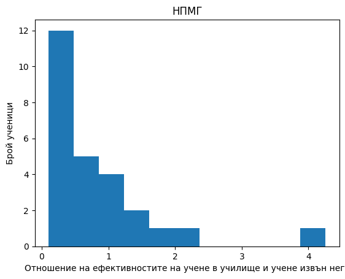
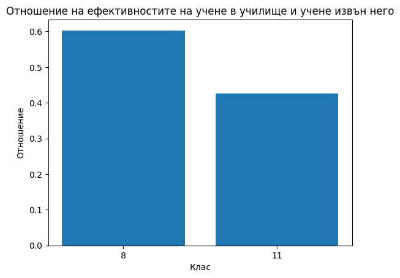
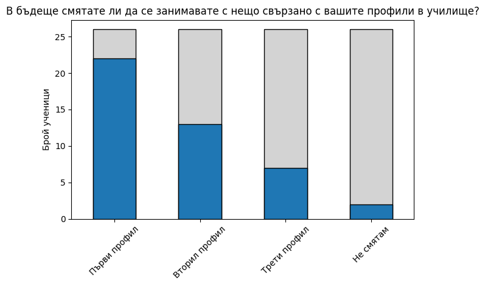
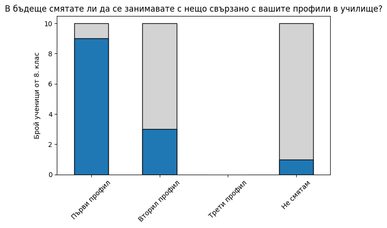
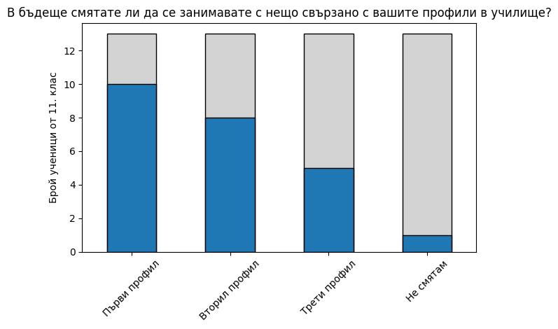

Ефективност на образованието в училище
След като проведохме анкета сред учениците на НПМГ стигнахме до следните резултати.Отношение на ефективностите на учене в училище и учене извън него
Средният ученик в НПМГ учи с 65% по-ефективно извън училище.

Интерес към профилите на учениците


